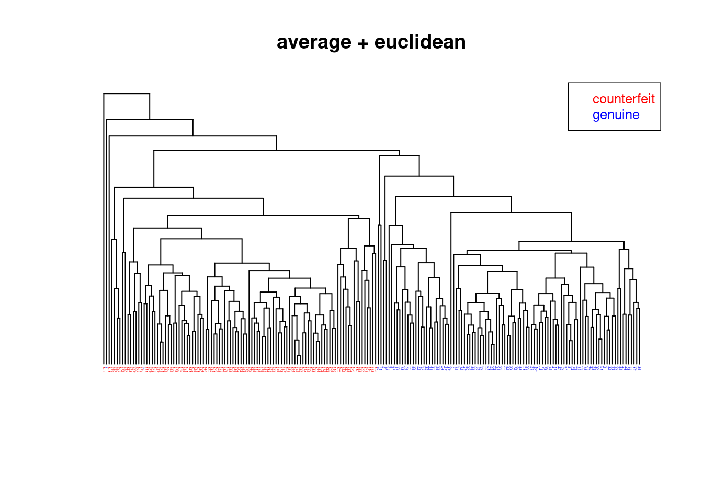

4 Unsupervised learning and clustering
4.1 Challenges in unsupervised learning
4.1.1 Objective
We observe data \(\symbfit x_1, \ldots, \symbfit x_n\) for \(n\) objects (or subjects). Each sample \(\symbfit x_i\) is a vector of dimension \(d\). Thus, for each of the \(n\) objects / subjects we have measurements on \(d\) variables. The aim of unsupervised learning is to identify patters relating the objects/subjects based on the information available in \(\symbfit x_i\). Note that in unsupervised learning we use only the information in \(\symbfit x_i\) and nothing else.
For illustration consider the first two principal components of the Iris flower data (see e.g. Worksheet 5):
Clearly there is a group structure among the samples that is linked to particular patterns in the first two principal components.
Note that in this plot we have used additional information, the class labels (setosa, versicolor, virginica), to highlighting the true underlying structure (the three flower species).
In unsupervised learning the class labels are (assumed to be) unknown, and the aim is to infer the clustering and thus the classes labels. 1
There are many methods for clustering and unsupervise learning, both purely algorithmic as well as probabilistic. In this chapter we will study a few of the most commonly used approaches.
4.1.2 Questions and problems
In order to implement unsupervised learning we need to address a number of questions:
- how do we define clusters?
- how do we learn / infer clusters?
- how many clusters are there? (this is surprisingly difficult!)
- how can we assess the uncertainty of clusters?
Once we know the clusters we are also interested in:
- which features define / separate each cluster?
(note this is a feature / variable selection problem, discussed in in supervised learning).
Many of these problems and questions are highly specific to the data at hand. Correspondingly, there are many different types of methods and models for clustering and unsupervised learning.
In terms of representing the data, unsupervised learning tries to balance between the following two extremes:
- all objects are grouped into a single cluster (low complexity model)
- all objects are put into their own cluster (high complexity model)
In practise, the aim is to find a compromise, i.e. a model that captures the structure in the data with appropriate complexity — not too low and not too complex.
4.1.3 Why is clustering difficult?
Partioning problem (combinatorics): How many partitions of \(n\) objects (say flowers) into \(K\) groups (say species) exists?
Answer:
\[ S(n,K) = \left\{\begin{array}{l} n \\ K \end{array} \right\} \] this is the “Sterling number of the second type”.
For large n: \[ S(n,K) \approx \frac{K^n }{ K!} \] Example:
| \(n\) | \(K\) | Number of possible partitions |
|---|---|---|
| 15 | 3 | \(\approx\) 2.4 million (\(10^6\)) |
| 20 | 4 | \(\approx\) 2.4 billion (\(10^9\)) |
| \(\vdots\) | ||
| 100 | 5 | \(\approx 6.6 \times 10^{76}\) |
These are enormously big numbers even for relatively small problems!
\(\Longrightarrow\) Clustering / partitioning / structure discovery is not easy!
\(\Longrightarrow\) We cannot expect perfect answers or a single “true” clustering
In fact, as a model of the data many differnt clusterings may fit the data equally well.
\(\Longrightarrow\) We need to assesse the uncertainty of the clustering
This can be done as part of probabilistic modelling or by resampling (e.g., bootstrap).
4.1.4 Common types of clustering methods
There are very many different clustering algorithms!
We consider the following two broad types of methods:
- Algorithmic clustering methods (these are not explicitly based on a probabilistic model)
- \(K\)-means
- PAM
- hierarchical clustering (distance or similarity-based, divise and agglomerative)
pros: fast, effective algorithms to find at least some grouping cons: no probabilistic interpretation, blackbox methods
- Model-based clustering (based on a probabilistic model)
- mixture models (e.g. Gaussian mixture models, GMMs, non-hierarchical)
- graphical models (e.g. Bayesian networks, Gaussian graphical models GGM, trees and networks)
pros: full probabilistic model with all corresponding advantages cons: computationally very expensive, sometimes impossible to compute exactly.
4.2 Hierarchical clustering
4.2.1 Tree-like structures
Often, categorisations of objects are nested, i.e. there sub-categories of categories etc. These can be naturally represented by tree-like hierarchical structures.
In many branches of science hierarchical clusterings are widely employed, for example in evolutionary biology: see e.g.
- Tree of Life explaining the biodiversity of life
- phylogenetic trees among species (e.g. vertebrata)
- population genetic trees to describe human evolution
- taxonomic trees for plant species
- etc.
Note that when visualising hierarchical structures typically the corresponding tree is depicted facing downwards, i.e. the root of the tree is shown on the top, and the tips/leaves of the tree are shown at the bottom!
In order to obtain such a hierarchical clustering from data two opposing strategies are commonly used:
- divisive or recursive partitioning algorithms
- grow the tree from the root downwards
- first determine the main two clusters, then recursively refine the clusters further.
- agglomerative algorithms
- grow the tree from the leaves upwards
- successively form partitions by first joining individual object together, then recursively join groups of items together, until all is merged.
In the following we discuss a number of popular hierarchical agglomerative clustering algorithms that are based on the pairwise distances / similarities (a \(n \times n\) matrix) among all data points.
4.2.2 Agglomerative hierarchical clustering algorithms
A general algorithm for agglomerative construction of a hierarchical clustering works as follows:
Initialisation:
Compute a dissimilarity / distance matrix between all pairs of objects where “objects” are single data points at this stage but later are also be sets of data points.
Iterative procedure:
identify the pair of objects with the smallest distance. These two objects are then merged together into one set. Create an internal node in the tree to represent this set.
update the distance matrix by computing the distances between the new set and all other objects. If the new set contains all data points the procedure terminates. The final node created is the root node.
For actual implementation of this algorithm two key ingredients are needed:
- a distance measure \(d(\symbfit a, \symbfit b)\) between two individual elementary data points \(\symbfit a\) and \(\symbfit b\).
This is typically one of the following:
- Euclidean distance \(d(\symbfit a, \symbfit b) = \sqrt{\sum_{i=1}^d ( a_i-b_i )^2} = \sqrt{(\symbfit a-\symbfit b)^T (\symbfit a-\symbfit b)}\)
- Squared Euclidean distance \(d(\symbfit a, \symbfit b) = (\symbfit a-\symbfit b)^T (\symbfit a-\symbfit b)\)
- Manhattan distance \(d(\symbfit a, \symbfit b) = \sum_{i=1}^d | a_i-b_i |\)
- Maximum norm \(d(\symbfit a, \symbfit b) = \underset{i \in \{1, \ldots, d\}}{\max} | a_i-b_i |\)
In the end, making the correct choice of distance will require subject knowledge about the data!
- a distance measure \(d(A, B)\) between two sets of objects \(A=\{\symbfit a_1, \symbfit a_2, \ldots, \symbfit a_{n_A} \}\) and \(B=\{\symbfit b_1, \symbfit b_2, \ldots, \symbfit b_{n_B}\}\) of size \(n_A\) and \(n_B\), respectively.
To determine the distance \(d(A, B)\) between these two sets the following measures are often employed:
- complete linkage (max. distance): \(d(A, B) = \underset{\symbfit a_i \in A, \symbfit b_i \in B}{\max} d(\symbfit a_i, \symbfit b_i)\)
- single linkage (min. distance): \(d(A, B) = \underset{\symbfit a_i \in A, \symbfit b_i \in B}{\min} d(\symbfit a_i, \symbfit b_i)\)
- average linkage (avg. distance): \(d(A, B) = \frac{1}{n_A n_B} \sum_{\symbfit a_i \in A} \sum_{\symbfit b_i \in B} d(\symbfit a_i, \symbfit b_i)\)
4.2.3 Ward’s clustering method
Another agglomerative hierarchical procedure is Ward’s minimum variance approach 2 (see also 3). In this approach in each iteration the two sets \(A\) and \(B\) are merged that lead to the smallest increase in within-group variation. The centroids of the two sets is given by \(\symbfit \mu_A = \frac{1}{n_A} \sum_{\symbfit a_i \in A} \symbfit a_i\) and \(\symbfit \mu_B = \frac{1}{n_B} \sum_{\symbfit b_i \in B} \symbfit b_i\).
The within-group sum of squares for group \(A\) is \[ w_A = \sum_{\symbfit a_i \in A} (\symbfit a_i -\symbfit \mu_A)^T (\symbfit a_i -\symbfit \mu_A) \] and is computed here on the basis of the difference of the observations \(\symbfit a_i\) relative to their mean \(\symbfit \mu_A\). However, since we typically only have pairwise distances available we don’t know the group means so this formula can’t be applied. Fortunately, it is also possible to compute \(w_A\) using only the pairwise differences using \[ w_A = \frac{1}{n_A} \sum_{\symbfit a_i, \symbfit a_j \in A, i < j} (\symbfit a_i -\symbfit a_j)^T (\symbfit a_i -\symbfit a_j) \] This trick is employed in Ward’s clustering method by constructing a distance measure between two sets \(A\) and \(B\) as \[ d(A, B) = w_{A \cup B} - w_A -w_B \, \] and using as the distance between two elementary data points \(\symbfit a\) and \(\symbfit b\) the squared Euclidean distance \[ d(\symbfit a, \symbfit b) = (\symbfit a- \symbfit b)^T (\symbfit a- \symbfit b) \, . \]
4.2.4 Application to Swiss banknote data set
This data set is reports 6 pysical measurements on 200 Swiss bank notes. Of the 200 notes 100 are genuine and 100 are counterfeit. The measurements are: length, left width, right width, bottom margin, top margin, diagonal length of the bank notes.
Plotting the first to PCAs of this data shows that there are indeed two well defined groups, and that these groups correspond precisely to the genuine and counterfeit banknotes:

We now compare the hierarchical clusterings of the Swiss bank note data using four different methods using Euclidean distance.
An interactive R Shiny web app of this analysis (which also allows to explore further distance measures) is available online at https://minerva.it.manchester.ac.uk/shiny/strimmer/hclust/.
Ward.D2 (=Ward’s method):
Average linkage:

Complete linkage:

Single linkage:

Result:
- All four trees / hierarchical clusterings are quite different!
- The Ward.D2 method is the only one that finds the correct grouping (except for a single error).
4.2.5 Assessment of the uncertainty of hierarchical clusterings
In practical application of hierarchical clustering methods is is essential to evaluate the stability and uncertainty of the obtained groupings. This is often done as follows using the “bootstrap”:
- Sampling with replacement is used to generate a number of so-called bootstrap data sets (say \(B=200\)) similar to the original one. Specifically, we create new data matrices by repeately randomly selecting columns (variables) from the original data matrix for inclusion in the bootstrap data matrix. Note that we sample columns as our aim is to cluster the samples.
- Subsequently, a hierarchical clustering is computed for each of the bootstrap data sets. As a result, we now have an “ensemble” of \(B\) bootstrap trees.
- Finally, analysis of the clusters (bipartions) shown in all the bootstrap trees allows to count the clusters that appear frequently, and also those that appear less frequently. These counts provide a measure of the stability of the clusterings appearing in the original tree.
- Additionally, from the bootstrap tree we can also compute a consensus tree containing the most stable clusters. This an be viewed as an “ensemble average” of all the bootstrap trees.
A disadvantage of this procedure is that bootstrapping trees is computationally very expensive, as the original procedure is already time consuming but now needs to be repeated a large number of times.
4.3 \(K\)-means clustering
4.3.1 Set-up
- We assume that there are \(K\) groups (i.e. \(K\) is known in advance).
- For each group \(k \in \{1, \ldots, K\}\) we assume a group mean \(\symbfit \mu_k\).
- Aim: partition the data points \(\symbfit x_1, \ldots, \symbfit x_n\) into \(K\) non-overlapping groups.
- Each of the \(n\) data points \(\symbfit x_i\) is assigned to exactly one of the \(K\) groups.
- Maximise the homogeneity within each group (i.e. each group should contain similar objects).
- Maximise the heterogeneity between the different groups (i.e each group should differ from the other groups).
4.3.2 Algorithm
After running \(K\)-means we will get estimates of \(\hat{\symbfit \mu}_k\) of the group means, as well allocations \(y_i \in \{1, \ldots, K\}\) of each data point \(\symbfit x_i\) to one of the classes.
Initialisation:
At the start of the algorithm the \(n\) observations \(\symbfit x_1, \ldots, \symbfit x_n\) are randomly allocated with equal probability to one of the \(K\) groups. The resulting assignment is \(y_1, \ldots, y_n\), with each \(y_i=\{1, \ldots, K\}\). With \(G_k = \{ i | y_i = k\}\) we denote the set of indices of the data points in cluster \(k\), and with \(n_k = | G_k |\) the number of samples in cluster \(k\).
Iterative refinement:
- Estimate the group means by \[ \hat{\symbfit \mu}_k = \frac{1}{n_k} \sum_{i \in G_k} \symbfit x_i \]
- Update the group allocations \(y_i\). Specifically, assign each data point \(\symbfit x_i\) to the group \(k\) with the nearest \(\hat{\symbfit \mu}_k\). The distance is measured in terms of the Euclidean norm: \[ \begin{split} y_i & = \underset{k}{\arg \min} \, \left| \symbfit x_i-\hat{\symbfit \mu}_k \right|_2 \\ & = \underset{k}{\arg \min} \, \left(\symbfit x_i-\hat{\symbfit \mu}_k\right)^T \left(\symbfit x_i-\hat{\symbfit \mu}_k\right) \\ \end{split} \]
Steps 1 and 2 are repeated until the algorithm converges (i.e. until the group allocations don’t change any more) or until a specified upper limit of iterations is reached.
4.3.3 Properties
\(K\)-means has been proposed in the 1950 to 1970s by various authors in diverse contexts 4. Despite its simplicity \(K\)-means is, perhaps surprisingly, a very effective clustering algorithm. The main reason for this is the close connection of \(K\)-means with probabilistic clustering based on Gaussian mixture models (for details see later section).
Since the clustering depends on the initialisation it is often useful to run \(K\)-means several times with different starting group allocations of the data points. Furthermore, non-random or non-uniform initialisations can lead to improved and faster convergence, see the K-means++ algorithm.
The clusters constructed in \(K\)-means have linear boundaries and thus form a Voronoi tessellation around the cluster means. Again, this can be explained by the close link of \(K\)-means with a particular Gaussian mixture model.
4.3.4 Choosing the number of clusters
Once the \(K\)-means algorithm has run we can assess the homogeneity and heterogeneity of the resulting clusters:
the total within-group sum of squares \(SSW\) (in R:
tot.withinss), or total unexplained sum of squares: \[ SSW = \sum_{k=1}^K \, \sum_{i \in G_k} (\symbfit x_i -\hat{\symbfit \mu}_k)^T (\symbfit x_i -\hat{\symbfit \mu}_k) \] This quantity decreases with \(K\) and is zero for \(K=n\). The \(K\)-means algorithm tries to minimise this quantity but it will typically only find a local minimum rather than the global one.the between-group sum of squares \(SSB\) (in R:
betweenss), or explained sum of squares: \[ SSB = \sum_{k=1}^K n_k (\hat{\symbfit \mu}_k - \hat{\symbfit \mu}_0)^T (\hat{\symbfit \mu}_k - \hat{\symbfit \mu}_0) \] where \(\hat{\symbfit \mu}_0 = \frac{1}{n} \sum_{i=1}^n \symbfit x_i = \frac{1}{n} \sum_{k=1}^K n_k \hat{\symbfit \mu}_k\) is the global mean of the samples. \(SSB\) increases with the number of clusters \(K\) until for \(K=n\) it becomes equal to the total sum of squares \(SST\).the total sum of squares \[ SST = \sum_{i=1}^n (\symbfit x_i - \hat{\symbfit \mu}_0)^T (\symbfit x_i - \hat{\symbfit \mu}_0) \, . \] By construction \(SST = SSB + SSW\) for any \(K\) (i.e. \(SST\) is a constant independent of \(K\)).
Dividing the sum of squares by the sample size \(n\) we get
- \(T = \frac{SST}{n}\) as the total variation,
- \(B = \frac{SSB}{n}\) as the explained variation and
- \(W = \frac{SSW}{n}\) as the total unexplained variation ,
- with \(T = B + W\).
In order to decide on the optimal number of clusters we run \(K\)-means for different settings for \(K\) and then choose the smallest \(K\) for which the explained variation \(B\) is not significantly worse compared to a clustering with a substantially larger \(K\) (see example below).
4.3.5 \(K\)-medoids aka PAM
A closely related clustering method is \(K\)-medoids or PAM (“Partitioning Around Medoids”).
This works exactly like \(K\)-means, only that
- instead of the estimated group means \(\hat{\symbfit \mu}_k\) one member of each group is selected as its representative (the so-called “medoid”)
- instead of squared Euclidean distance other dissimilarity measures are also allowed.
4.3.6 Application of \(K\)-means to Iris data
Scatter plots of Iris data:

The R output from a \(K\)-means analysis with known true number of clusters specified (\(K=3\)) is: ::: {.cell warnings=‘false’}
kmeans.out = kmeans(X.iris, 3)
kmeans.outK-means clustering with 3 clusters of sizes 53, 50, 47
Cluster means:
Sepal.Length Sepal.Width Petal.Length Petal.Width
1 -0.05005221 -0.88042696 0.3465767 0.2805873
2 -1.01119138 0.85041372 -1.3006301 -1.2507035
3 1.13217737 0.08812645 0.9928284 1.0141287
Clustering vector:
[1] 2 2 2 2 2 2 2 2 2 2 2 2 2 2 2 2 2 2 2 2 2 2 2 2 2 2 2 2 2 2 2 2 2 2 2 2 2
[38] 2 2 2 2 2 2 2 2 2 2 2 2 2 3 3 3 1 1 1 3 1 1 1 1 1 1 1 1 3 1 1 1 1 3 1 1 1
[75] 1 3 3 3 1 1 1 1 1 1 1 3 3 1 1 1 1 1 1 1 1 1 1 1 1 1 3 1 3 3 3 3 1 3 3 3 3
[112] 3 3 1 1 3 3 3 3 1 3 1 3 1 3 3 1 3 3 3 3 3 3 1 1 3 3 3 1 3 3 3 1 3 3 3 1 3
[149] 3 1
Within cluster sum of squares by cluster:
[1] 44.08754 47.35062 47.45019
(between_SS / total_SS = 76.7 %)
Available components:
[1] "cluster" "centers" "totss" "withinss" "tot.withinss"
[6] "betweenss" "size" "iter" "ifault" ::: The corresponding total within-group sum of squares (\(SSW\), tot.withinss) is ::: {.cell warnings=‘false’}
kmeans.out$tot.withinss[1] 138.8884::: and the between-group sum of squares (\(SSB\), betweenss) is ::: {.cell warnings=‘false’}
kmeans.out$betweenss[1] 457.1116::: By comparing with the known class assignments we can assess the accuracy of \(K\)-means clustering:
table(L.iris, kmeans.out$cluster)
L.iris 1 2 3
setosa 0 50 0
versicolor 39 0 11
virginica 14 0 36For choosing \(K\) we run \(K\)-means several times and compute within and between cluster variation in dependence of \(K\):

Thus, \(K=3\) clusters seem appropriate since the the explained variation does not significantly improve (and the unexplained variation does not significantly decrease) with a further increase of the number of clusters.
4.3.7 Arbitrariness of cluster labels and label switching
It is important to realise that in unsupervised learning and clustering the labels of each group are assigned in an arbitrary fashion. Recall that for \(K\) groups there are \(K!\) possibilities to attach the labels, corresponding to the number of permutations of \(K\) groups.
Thus, different runs of a clustering algorithm such as \(K\)-means may return the same clustering (groupings of samples) but with different labels. This phenomenon is called “label switching” and makes it difficult to automatise comparison of clusterings. In particular, one cannot simply rely on the automatically assigned group label, instead one needs to compare the actual members of the clusters.
A way to resolve the problem of label switching is to relabel the clusters using additional information, such as requiring that some samples are in specific groups (e.g.: sample 1 is always in group labelled “1”), and/or linking labels to orderings or constraints on the group characteristics (e.g.: the group with label “1” has always a smaller mean that group with label “2”).
4.4 Mixture models
4.4.1 Finite mixture model
- \(K\) groups / classes / categories, with finite \(K\) known in advance.
- Probability of class \(k\): \(\text{Pr}(k) = \pi_k\) with \(\sum_{k=1}^K \pi_k = 1\).
- Each class \(k \in C= \{1, \ldots, K\}\) is modelled by its own distribution \(F_k\) with own parameters \(\symbfit \theta_k\).
- Density of class \(k\): \(f_k(\symbfit x) = f(\symbfit x| k)\).
- The conditional means and variances for each class \(k \in C\) are \(\text{E}(\symbfit x| k) = \symbfit \mu_k\) and \(\text{Var}(\symbfit x| k) = \symbfit \Sigma_k\).
- The resulting mixture density for the observed variable \(\symbfit x\) is \[ f_{\text{mix}}(\symbfit x) = \sum_{k=1}^K \pi_k f_k(\symbfit x) \]
Very often one uses multivariate normal components \(f_k(\symbfit x) = N(\symbfit x| \symbfit \mu_k, \symbfit \Sigma_k)\) \(\\ \Longrightarrow\) Gaussian mixture model (GMM)
Mixture models are fundamental not just in clustering but for many other applications (e.g. classification).
Note: don’t confuse mixture model with mixed model (= terminology for a random effects regression model).
4.4.2 Total mean and variance of a multivariate mixture model
Using the law of total expectation we obtain the mean of the mixture density with multivariate \(\symbfit x\) as follows: \[ \begin{split} \text{E}(\symbfit x) & = \text{E}(\text{E}(\symbfit x| k)) \\ & = \text{E}( \symbfit \mu_k ) \\ &= \sum_{k=1}^K \pi_k \symbfit \mu_k \\ &= \symbfit \mu_0 \\ \end{split} \] Note that we treat both \(\symbfit x\) as well as \(k\) as random variables.
Similarly, using the law of total variance we compute the marginal variance: \[ \begin{split} \underbrace{\text{Var}(\symbfit x)}_{\text{total}} & = \underbrace{ \text{Var}( \text{E}(\symbfit x| k ) )}_{\text{explained / between-group}} + \underbrace{\text{E}(\text{Var}(\symbfit x|k))}_{\text{unexplained / expected within-group / pooled}} \\ \symbfit \Sigma_0 & = \text{Var}( \symbfit \mu_k ) + \text{E}( \symbfit \Sigma_k ) \\ & = \sum_{k=1}^K \pi_k (\symbfit \mu_k - \symbfit \mu_0) (\symbfit \mu_k - \symbfit \mu_0)^T + \sum_{k=1}^K \pi_k \symbfit \Sigma_k \\ & = \symbfit \Sigma_{\text{explained}} + \symbfit \Sigma_{\text{unexplained}} \\ \end{split} \]
Thus, the total variance decomposes into the explained (between group) variance and the unexplained (expected within group, pooled) variance.
4.4.3 Total variation
The total variation is given by the trace of the covariance matrix. The above decomposition for the total variation is \[ \begin{split} \text{Tr}(\symbfit \Sigma_0) & = \text{Tr}( \symbfit \Sigma_{\text{explained}} ) + \text{Tr}( \symbfit \Sigma_{\text{unexplained}} ) \\ & = \sum_{k=1}^K \pi_k \text{Tr}((\symbfit \mu_k - \symbfit \mu_0) (\symbfit \mu_k - \symbfit \mu_0)^T) + \sum_{k=1}^K \pi_k \text{Tr}(\symbfit \Sigma_k) \\ & = \sum_{k=1}^K \pi_k (\symbfit \mu_k - \symbfit \mu_0)^T (\symbfit \mu_k - \symbfit \mu_0) + \sum_{k=1}^K \pi_k \text{Tr}(\symbfit \Sigma_k)\\ \end{split} \] If the covariances are replaced by their empirical estimates we obtain the \(T=B+W\) decomposition of total variation familiar from \(K\)-means: \[T = \text{Tr}\left( \hat{\symbfit \Sigma}_0 \right) = \frac{1}{n} \sum_{i=1}^n (\symbfit x_i - \hat{\symbfit \mu}_0)^T (\symbfit x_i - \hat{\symbfit \mu}_0)\] \[B = \text{Tr}( \hat{\symbfit \Sigma}_{\text{explained}} ) = \frac{1}{n} \sum_{k=1}^K n_k (\hat{\symbfit \mu}_k - \hat{\symbfit \mu}_0)^T (\hat{\symbfit \mu}_k - \hat{\symbfit \mu}_0)\] \[W = \text{Tr}( \hat{\symbfit \Sigma}_{\text{unexplained}} ) = \frac{1}{n} \sum_{k=1}^K \, \sum_{i \in G_k} (\symbfit x_i -\hat{\symbfit \mu}_k)^T (\symbfit x_i -\hat{\symbfit \mu}_k) \]
4.4.4 Univariate mixture
For a univariate mixture (\(d=1\)) with \(K=2\) components we get \[ \mu_0 = \pi_1 \mu_1+ \pi_2 \mu_2 \, , \] \[ \sigma^2_{\text{within}} = \pi_1 \sigma^2_1 + \pi_2 \sigma^2_2 = \sigma^2_{\text{pooled}}\,, \] also known as pooled variance, and \[ \begin{split} \sigma^2_{\text{between}} &= \pi_1 (\mu_1 - \mu_0)^2 + \pi_2 (\mu_2 - \mu_0)^2 \\ & =\pi_1 \pi_2^2 (\mu_1 - \mu_2)^2 + \pi_2 \pi_1^2 (\mu_1 - \mu_2)^2\\ & = \pi_1 \pi_2 (\mu_1 - \mu_2)^2 \\ & = \left( \frac{1}{\pi_1} + \frac{1}{\pi_2} \right)^{-1} (\mu_1 - \mu_2)^2 \\ \end{split} \,. \] The ratio of the between-group variance and the within-group variance is proportional (by factor of \(n\)) to the squared pooled-variance \(t\)-score: \[ \frac{\sigma^2_{\text{between}}}{\sigma^2_{\text{within}}} = \frac{ (\mu_1 - \mu_2)^2}{ \left(\frac{1}{\pi_1} + \frac{1}{\pi_2} \right) \sigma^2_{\text{pooled}} }= \frac{t_{\text{pooled}}^2}{n} \] If you are familiar with ANOVA (e.g. linear models course) you will recognise this ratio as the \(F\)-score.
4.4.5 Example of mixtures
Mixtures can take on many different shapes and forms, so it is instructive to study a few examples. An interactive tool to visualise two component normal mixture is available online as R Shiny web app at https://minerva.it.manchester.ac.uk/shiny/strimmer/mixture/.


The first plot shows the bimodal density of a mixture distribution consisting of two normals with \(\pi_1=0.7\), \(\mu_1=-1\), \(\mu_2=2\) and the two variances equal to 1 (\(\sigma^2_1 = 1\) and \(\sigma^2_2 = 1\)). Because the two components are well-separated there are two clear modes. The plot also shows the density of a normal distribution with the same total mean (\(\mu_0=-0.1\)) and variance (\(\sigma_0^2=2.89\)) as the mixture distribution. Clearly the total normal and the mixture density are very different.
However, a two-component mixtures can also be unimodal. For example, if the mean of the second component is adjusted to \(\mu_2=0\) then there is only a single mode and the total normal density with \(\mu_0=-0.7\) and \(\sigma_0^2=1.21\) is now almost inistinguishable in form from the mixture density. Thus, in this case it will be very hard (or even impossible) to identify the two peaks from data.
Most mixtures we consider in this course are multivariate. For illustration, here is a plot of a mixture of two bivariate normals, with \(\pi_1=0.7\), \(\symbfit \mu_1 = \begin{pmatrix}-1 \\1 \\ \end{pmatrix}\), \(\symbfit \Sigma_1 = \begin{pmatrix} 1 & 0.7 \\ 0.7 & 1 \\ \end{pmatrix}\), \(\symbfit \mu_2 = \begin{pmatrix}2.5 \\0.5 \\ \end{pmatrix}\) and \(\symbfit \Sigma_2 = \begin{pmatrix} 1 & -0.7 \\ -0.7 & 1 \\ \end{pmatrix}\):

4.4.6 Sampling from a mixture model
Assuming we know how to sample from the component densities \(f_k(\symbfit x)\) of the mixture model it is straightforward to set up a procedure for sampling from the mixture \(f_{\text{mix}}(\symbfit x) = \sum_{k=1}^K \pi_k f_k(\symbfit x)\) itself.
This is done in a two-step process:
Draw from categorical distribution with parameter \(\symbfit \pi=(\pi_1, \ldots, \pi_K)^T\): \[\symbfit z\sim \text{Cat}(\symbfit \pi)\] Here the vector \(\symbfit z= (z_1, \ldots, z_K)^T\) indicates a hard group 0/1 allocation, with all components \(z_{\neq k}=0\) except for a single entry \(z_k=1\).
Subsequently, sample from the component \(k\) selected in step 1: \[ \symbfit x\sim F_k \]
This two-stage sampling approach is also known as hierarchical generative model for a mixture distribution. This generative view is not only useful for simulating data from a mixture model but also highlights the role of the latent variable (the class allocation).
4.5 Fitting mixture models to data and inferring the latent states
In the following we denote by
- \(\symbfit X= (\symbfit x_1, \ldots, \symbfit x_n)^T\) the data matrix containing the observations of \(n\) independent and identically distributed samples \(\symbfit x_1, \ldots, \symbfit x_n\), and
- \(\symbfit y= (y_1, \ldots, y_n)^T\) the associated group memberships, as well as
- the parameters \(\symbfit \theta\) which for a Gaussian mixture model are \(\symbfit \theta= \{\symbfit \pi, \symbfit \mu_1, \ldots, \symbfit \mu_K, \symbfit \Sigma_1, \ldots, \symbfit \Sigma_K\}\).
4.5.1 Observed and latent variables
When we observe data from a mixture model we collect samples \(\symbfit x_1, \ldots, \symbfit x_n\). Associated with each observed \(\symbfit x_i\) is the corresponding underlying class allocation \(y_1, \ldots, y_n\) where each \(y_i\) takes on a value from \(C = \{1, \ldots, K\}\). Crucially, the class allocations \(y_i\) are unknown and cannot be directly observed, thus are latent.
- The joint density for observed and unobserved variables: \[f(\symbfit x, y) = f(\symbfit x| y) \text{Pr}(y) = f_y(\symbfit x) \pi_y\]
The mixture density is therefore a marginal density as it arises from the joint density \(f(\symbfit x, y)\) by marginalising over the discrete variable \(y\).
- Marginalisation: \(f(\symbfit x) = \sum_{y \in C} f(\symbfit x, y)\)
4.5.2 Complete data likelihood and observed data likelihood
If we know \(\symbfit y\) in advance, i.e. if we know which sample belongs to a particular group, we can construct a complete data log-likelihood based on the joint distribution \(f(\symbfit x, y) = \pi_y f_y(\symbfit x)\). The log-likelihood for \(\symbfit \theta\) given the both \(\symbfit X\) and \(\symbfit y\) is \[ \log L(\symbfit \theta| \symbfit X, \symbfit y) = \sum_{i=1}^n \log f(\symbfit x_i, y_i) = \sum_{i=1}^n \log \left(\pi_{y_i} f_{y_i}(\symbfit x_i) \right) \]
On the other hand, typically we do not know \(\symbfit y\) and therefore use the marginal or mixture density \(f(\symbfit x)\) to construct the observed data log-likelihood (sometimes also called incomplete data log-likelihood) \(f(\symbfit x| \symbfit \theta)\) as \[ \begin{split} \log L(\symbfit \theta| \symbfit X) & =\sum_{i=1}^n \log f(\symbfit x_i | \symbfit \theta)\\ & = \sum_{i=1}^n \log \left( \sum_{k=1}^K \pi_k f_k(\symbfit x_i) \right)\\ \end{split} \]
The observed data log-likelihood can also be computed from the complete data likelihood function by marginalising over \(\symbfit y\) \[ \begin{split} \log L(\symbfit \theta| \symbfit X) &= \log \sum_{\symbfit y} L(\symbfit \theta| \symbfit X, \symbfit y)\\ &= \log \sum_{y_1, \ldots, y_K} \prod_{i=1}^n f(\symbfit x_i, y_i)\\ &= \log \prod_{i=1}^n \sum_{k=1}^K f(\symbfit x_i, k)\\ & = \sum_{i=1}^n \log \left( \sum_{k=1}^K f(\symbfit x_i, k) \right) \end{split} \]
Clustering with a mixture model can be viewed as an incomplete or missing data problem (see also MATH27720 Statistics 2).
Specifically, we face the problem of
- fitting the model using only the observed data \(\symbfit X\) and
- simultaneously inferring the class allocations \(\symbfit y\), i.e. states of the latent variable.
4.5.3 Fitting the mixture model to the observed data
For large sample size \(n\) the standard way to fit a mixture model is to employ maximum likelihood to find the MLEs of the parameters of the mixture model.
The direct way to fit a mixture model by maximum likelihood is to maximise the observed data log-likelihood function with regard to \(\symbfit \theta\): \[ \hat{\symbfit \theta}^{ML} = \underset{\symbfit \theta}{\arg \max}\,\, \log L(\symbfit \theta| \symbfit X) \]
Unfortunately, in practise evaluation and optimisation of the log-likelihood function can be difficult due to a number of reasons:
- The form of the observed data log-likelihood function prevents analytic simplifications (note the sum inside the logarithm) and thus can be difficult to compute.
- Because of the symmetries due to exchangeability of cluster labels the likelihood function is multimodal and thus hard to optimise. Note this is also linked to the general problem of label switching and non-identifiability of cluster labels — see the discussion for \(K\)-means clustering.
- Further identifiability issues can arise if (for instance) two neighboring components of the mixture model are largely overlapping and thus are too close to each other to be discriminated as two different modes. In other words, it is difficult to determine the number of classes.
- Furthermore, the likelihood in Gaussian mixture models is singular if one of the fitted covariance matrices becomes singular. However, this can be easily adressed by using some form of regularisation (Bayes, penalised ML, etc.) or simply by requiring sufficient sample size per group.
4.5.4 Predicting the group allocation of a given sample
In probabilistic clustering the aim is to infer the latent states \(y_1, \ldots, y_n\) for all observed samples \(\symbfit x_1, \ldots, \symbfit x_n\).
Assuming that the mixture model is known (either in advance or after fitting it) Bayes’ theorem allows predict the probability that an observation \(\symbfit x_i\) falls in group \(k \in \{1, \ldots, K\}\): \[ q_i(k) = \text{Pr}(k | \symbfit x_i) = \frac{\pi_k f_k(\symbfit x_i ) }{ f(\symbfit x_i)} \] Thus, for each of the \(n\) samples we get a probability mass function over the \(K\) classes with \(\sum_{k=1}^K q_i(k)=1\).
The posterior probabilities in \(q_i(k)\) provide a so-called soft assignment of the sample \(\symbfit x_i\) to all classes rather than a 0/1 hard assignment to a specific class (as for example in the \(K\)-means algorithm).
To obtain at a hard clustering and to infer the most probable latent state we select the class with the highest probability \[ y_i =\underset{k}{\arg \max}\,\,q_i(k) \]
Thus, in probabilistic clustering we directly obtain an assessment of the uncertainty of the class assignment for a sample \(\symbfit x_i\) (which is not the case in simple algorithmic clustering such \(K\)-means). We can use this information to check whether there are several classes with equal or similar probability. This will be the case, e.g., if \(\symbfit x_i\) lies near the boundary between two neighbouring classes.
Using the interactive Shiny app for the univariate normal component mixture (online at https://minerva.it.manchester.ac.uk/shiny/strimmer/mixture/) you can explore the posterior probabilities of each class.
4.6 Application of Gaussian mixture models
4.6.1 Choosing the number of classes
In an application of a GMM we need to select a suitable value for \(K\), i.e. the number of classes.
Since GMMs operate in a likelihood framework we can use penalised likelihood model selection criteria to choose among different models (i.e. GMMs with different numbers of classes).
The most popular choices are AIC (Akaike Information Criterion) and BIC (Bayesian Information criterion) defined as follows: \[\text{AIC}= -2 \log L + 2 K \] \[\text{BIC}= - 2 \log L +K \log(n)\]
In order to choose a suitable model we evaluate different models with different \(K\) and then choose the model that minimises \(\text{AIC}\) or \(\text{BIC}\)
Note that in both criteria more complex models with more parameters (in this case groups) are penalised over simpler models in order to prevent overfitting.
Another way of choosing optimal numbers of clusters is by cross-validation (see later chapter on supervised learning).
4.6.2 Application of GMMs to Iris flower data
We now explore the application of Gaussian mixture models to the Iris flower data set we also investigated with PCA and K-means.
First, we fit a GMM with 3 clusters, using the R software “mclust” 5.
data(iris)
X.iris = scale((iris[, 1:4]), scale=TRUE) # center and standardise
L.iris = iris[, 5]
library("mclust")
gmm3 = Mclust(X.iris, G=3, verbose=FALSE)
plot(gmm3, what="classification")
The “mclust” software has used the following model when fitting the mixture: ::: {.cell}
gmm3$modelName[1] "VVV"::: Here “VVV” is the name used by the “mclust” software for a model allowing for an individual unrestricted covariance matrix \(\symbfit \Sigma_k\) for each class \(k\).
This GMM has a substantially lower misclassification error compared to \(K\)-means with the same number of clusters:
table(gmm3$classification, L.iris) L.iris
setosa versicolor virginica
1 50 0 0
2 0 45 0
3 0 5 50Note that in “mclust” the BIC criterion is defined with the opposite sign (\(\text{BIC}_{\text{mclust}} = 2 \log L -K \log(n)\)), thus we need to find the maximum value rather than the smallest value.
If we compute BIC for various numbers of groups we find that the model with the best \(\text{BIC}_{\text{mclust}}\) is a model with 2 clusters but the model with 3 cluster has nearly as good a BIC:

4.7 The EM algorithm
4.7.1 Motivation
As discussed above, the observed data log-likelihood can be difficult to maximise directly due to its form as a log marginal likelihood. Intriguingly, it is possible to optimise it indirectly using the complete data log-likelihood, and what’s more this also allows in many cases for an analytic expression of the maximisation step.
This method is called the EM algorithm and has been formally proposed and described by Arthur Dempster (1929–) and others in 19776 but the algorithm was already know prior. It iteratively estimates both the parameters of the mixture model parameters and the latent states. The key idea behind the EM algorithm is to capitalise on the simplicity of the complete data likelihood and to obtain estimates of \(\symbfit \theta\) by imputing the missing group allocations and then subsequently iteratively refining both the imputations and the estimates of \(\symbfit \theta\).
More precisely, in the EM (=expectation-maximisation) algorithm we alternate between
Step 1) updating the soft allocations of each sample using the current estimate of the parameters \(\symbfit \theta\) (obtained in step 2)
Step 2) updating the parameter estimates by maximising the expected complete data log-likelihood. The expectation is taken with regard to the distribution over the latent states (obtained in step 1). Thus the complete data log-likelihood is averaged over the soft class assignments. For an exponential family (e.g. when the distributions for each group are normal) maximisation of the expected complete data log-likelihood can even be done analytically.
4.7.2 The EM algorithm
Specifically, the EM algorithm proceeds as follows:
- Initialisation:
- Start with a guess of the parameters \(\hat{\symbfit \theta}^{(1)}\), then continue with “E” Step, Part A.
- Alternatively, start with a guess of the soft allocations for each sample \(q_i(k)^{(1)}\), collected in the matrix \(\symbfit Q^{(1)}\), then continue with “E” Step, Part B.
This may be derived from some prior information, e.g., from running \(K\)-means. Caveat: some particular initialisations correspond to invariant states and hence should be avoided (see further below).
- E “expectation” step
Part A: Use Bayes’ theorem to compute new probabilities of allocation to class \(k\) for all the samples \(\symbfit x_i\): \[ q_i(k)^{(b+1)} \leftarrow \frac{ \hat{\pi}_k^{(b)} f_k(\symbfit x_i | \hat{\symbfit \theta}^{(b)}) }{ f(\symbfit x_i |\hat{\symbfit \theta}^{(b)} ) } \] Note that to obtain \(q_i(k)^{(b+1)}\) the current estimate \(\hat{\symbfit \theta}^{(b)}\) of the parameters of the mixture model is required.
Part B: Construct the expected complete data log-likelihood function for \(\symbfit \theta\) using the soft allocations \(q_i(k)^{(b+1)}\) collected in the matrix \(\symbfit Q^{(b+1)}\): \[ G(\symbfit \theta| \symbfit X, \symbfit Q^{(b+1)} ) = \sum_{i=1}^n \sum_{k=1}^K q_i(k)^{(b+1)} \log \left( \pi_k f_k(\symbfit x_i) \right) \] Note that in the case that the soft allocations \(\symbfit Q^{(b+1)}\) turn into hard 0/1 allocations then \(G(\symbfit \theta| \symbfit X, \symbfit Q^{(b+1)})\) becomes equivalent to the complete data log-likelihood.
M “maximisation” step — Maximise the expected complete data log-likelihood to update the estimates of mixture model parameters: \[ \hat{\symbfit \theta}^{(b+1)} \leftarrow \arg \max_{\symbfit \theta} G(\symbfit \theta| \symbfit X, \symbfit Q^{(b+1)} ) \]
Continue with 2) “E” Step until the series \(\hat{\symbfit \theta}^{(1)}, \hat{\symbfit \theta}^{(2)}, \hat{\symbfit \theta}^{(3)}, \ldots\) has converged.
Crucially, maximisation of the expected complete data log-likelihood is typically much easier than maximisation of the observed data log-likelihood, and in many cases even analytically tractable, which is why in this case the EM algorithm is often preferred over direct maximisation of the observed data log-likelihood.
Note that to avoid singularities in the expected log-likelihood function we may need to adopt regularisation (i.e. penalised maximum likelihood or Bayesian learning) for estimating the parameters in the M-step.
4.7.3 EM algorithm for multivariate normal mixture model
We now consider the EM algorithm applied to the case when the conditional group distributions are normal, i.e. when applied to the Gaussian mixture model (GMM). In this case the two iterative steps in the EM algorithm can be expressed as follows:
E-step:
Update the soft allocations: \[ q_i(k)^{(b+1)} = \frac{ \hat{\pi}_k^{(b)} N(\symbfit x_i | \hat{\symbfit \mu}_k^{(b)}, \hat{\symbfit \Sigma}_k^{(b)}) }{ \hat{f}^{(b)} \left(\symbfit x_i | \hat{\pi}_1^{(b)}, \ldots, \hat{\pi}_K^{(b)}, \hat{\symbfit \mu}_1^{(b)}, \ldots, \hat{\symbfit \mu}_K^{(b)}, \hat{\symbfit \Sigma}_1^{(b)}, \ldots, \hat{\symbfit \Sigma}_K^{(b)} \right) } \]
Correspondingly, the number of samples assigned to class \(k\) in the current step is \[ n_k^{(b+1)} = \sum_{i=1}^n q_i(k)^{(b+1)} \] Note this is not necessarily an integer because of the soft allocations of samples to groups.
The expected complete data log-likelihood becomes: \[ G(\pi_1, \ldots \pi_K,\symbfit \mu_1, \ldots, \symbfit \mu_K, \symbfit \Sigma_1, \ldots, \symbfit \Sigma_K | \symbfit X, \symbfit Q^{(b+1)} ) = \sum_{i=1}^n \sum_{k=1}^K q_i(k)^{(b+1)} \log \left( \pi_k f_k(\symbfit x_i) \right) \] with \[ \log \left( \pi_k f_k(\symbfit x_i) \right) = -\frac{1}{2} (\symbfit x-\symbfit \mu_k)^T \symbfit \Sigma_k^{-1} (\symbfit x-\symbfit \mu_k) -\frac{1}{2} \log \det(\symbfit \Sigma_k) +\log(\pi_k) \] (Remark: we will encounter this expression again in the next chapter when discussing quadratic discriminant analysis).
M-step:
The maximisation of the expected complete data log-likelihood can be done analytically as it is a weighted version of the conventional single group multivariate normal log-likelihood. The resulting estimators are also weighted variants of the usual MLEs.
The updated estimates of the group probabilities are \[ \hat{\pi}_k^{(b+1)} = \frac{n_k^{(b+1)}}{n} \] The updated estimates of the means are \[ \hat{\symbfit \mu}_k^{(b+1)} = \frac{1}{n_k^{(b+1)}} \sum_{i=1}^n q_i(k)^{(b+1)} \symbfit x_i \] and the updated covariance estimates are \[ \hat{\symbfit \Sigma}_k^{(b+1)} = \frac{1}{n_k^{(b+1)}} \sum_{i=1}^n q_i(k)^{(b+1)} \left( \symbfit x_i -\symbfit \mu_k^{(b+1)}\right) \left( \symbfit x_i -\symbfit \mu_k^{(b+1)}\right)^T \]
Note that if \(q_i(k)\) is a hard allocation (so that for any \(i\) only one class has weight 1 and all others weight 0) then all estimators above reduce to the usual MLEs.
In Worksheet 8 you can find a simple R implementation of the EM algorithm for univariate normal mixtures.
Similar analytical expressions can also be found in more general mixtures where the components are exponential families. As mentioned above this is one of the advantages of using the EM algorithm.
4.7.4 Convergence and invariant states
Under mild assumptions the EM algorithm is guaranteed to monotonically converge to local optima of the observed data log-likelihood 7. Thus the series \(\hat{\symbfit \theta}^{(1)}, \hat{\symbfit \theta}^{(2)}, \hat{\symbfit \theta}^{(3)}, \ldots\) converges to the estimate \(\hat{\symbfit \theta}\) found when maximising the observed data log-likelihood. However, the speed of convergence in the EM algorithm can sometimes be slow, and there are also situations in which there is no convergence at all to \(\hat{\symbfit \theta}\) because the EM algorithm remains in an invariant state.
An example of such an invariant state for a Gaussian mixture model is uniform initialisation of the latent variables \(q_i(k) = \frac{1}{K}\), where \(K\) is the number of classes.
With this we get in the M step \(n_k = \frac{n}{K}\) and as parameter estimates \[
\hat{\pi}_k = \frac{1}{K}
\] \[
\hat{\symbfit \mu}_k = \frac{1}{n} \sum_{i=1}^n \symbfit x_i = \bar{\symbfit x}
\] \[
\hat{\symbfit \Sigma}_k = \frac{1}{n} \sum_{i=1}^n ( \symbfit x_i -\bar{\symbfit x}) ( \symbfit x_i -\bar{\symbfit x})^T = \hat{\symbfit \Sigma}
\] Crucially, none of these actually depend on the group \(k\)! Thus, in the E step when the next soft allocations are determined this leads to \[
q_i(k) = \frac{ \frac{1}{K} N(\symbfit x_i | \bar{\symbfit x}, \hat{\symbfit \Sigma} ) }{ \sum_{j=1}^K \frac{1}{K} N(\symbfit x_i | \bar{\symbfit x}, \hat{\symbfit \Sigma} ) } = \frac{1}{K}
\] After one cycle in the EM algorithm we arrive at the same soft allocation that we started with, and the algorithm is trapped in an invariant state! Therefore uniform initialisation should clearly be avoided!
You will explore this effect in practise in Worksheet 8.
4.7.5 Connection with the \(K\)-means clustering method
The \(K\)-means algorithm is very closely related to the EM algorithm and probabilistic clustering with a specific Gaussian mixture models.
Specifically, we assume a simplified model where the probabilities \(\pi_k\) of all classes are equal (i.e. \(\pi_k=\frac{1}{K}\)) and where the covariances \(\symbfit \Sigma_k\) are all of the same spherical form \(\sigma^2 \symbfit I\). Thus, the covariance does not depend on the group, there is no correlation between the variables and the variance of all variables is the same.
First, we consider the “E” step. Using the mixture model above the soft assignment for the class allocation becomes \[ \log( q_i(k) ) = -\frac{1}{2 \sigma^2} (\symbfit x_i-\hat{\symbfit \mu}_k)^T (\symbfit x_i-\hat{\symbfit \mu}_k) + \text{const} \] where \(\text{const}\) does not depend on \(k\). This can turned into a hard class allocation by \[ \begin{split} y_i &= \underset{k}{\arg \max} \log( q_i(k) ) \\ & = \underset{k}{\arg \min} (\symbfit x_i-\hat{\symbfit \mu}_k)^T (\symbfit x_i-\hat{\symbfit \mu}_k)\\ \end{split} \] which is exactly the \(K\)-means rule to dallocate of samples to groups.
Second, in the “M” step we compute the parameters of the model. If the class allocations are hard the expected log-likelihood becomes the observed data likelihood and the MLE of the group mean is the average of samples in that group.
Thus, \(K\)-means can be viewed as an EM type algorithm to provide hard classification based on a simple restricted Gaussian mixture model.
4.7.6 Why the EM algorithm works — an entropy point of view
The iterative (soft) imputation of the latent states in the EM algorithm is intuitively clear.
However, in order to get a better understanding of EM we need to demonstrate
- why the expected observed log-likelihood needs to be maximised rather than, e.g., the observed log-likelihood with hard allocations, and
- that applying the EM algorithm versus directly maximising the marginal likelihood both lead to the same fitted mixture model.
Intriguingly, both these aspects of the EM algorithm are easiest to understand from an entropy point of view, i.e. considering the entropy foundations of maximum likelihood and Bayesian learning — for details see MATH27720 Statistics 2. Specifically, the reason for the need of using expectation is the link between likelihood and cross-entropy (which also is defined as expectation). Furthermore, the EM algorithm is an example of using an ELBO (“evidence lower bound”) to successively approximate the maximised marginal log-likelihood, with the bound only getting better in each step.
First, recall that the method of maximum likelihood results from minimising the KL divergence between an empirical distribution \(Q_{\symbfit x}\) representing the observations \(\symbfit x_1, \ldots, \symbfit x_n\) and the model family \(F_{\symbfit x}^{\symbfit \theta}\) with parameters \(\symbfit \theta\): \[ \hat{\symbfit \theta}^{ML} = \underset{\symbfit \theta}{\arg \min}\,\, D_{\text{KL}}(Q_{\symbfit x}, F_{\symbfit x}^{\symbfit \theta}) \] The KL divergence decomposes into a cross-entropy and an entropy part \[ D_{\text{KL}}(Q_{\symbfit x}, F_{\symbfit \theta}) = H(Q_{\symbfit x}, F_{\symbfit x}^{\symbfit \theta})- H(Q_{\symbfit x}) \] hence minimising the KL divergence with regard to \(\symbfit \theta\) is the same as maximising the function \[ \begin{split} -n H(Q_{\symbfit x}, F_{\symbfit x}^{\symbfit \theta}) &= n \text{E}_{Q_{\symbfit x}}( \log f(\symbfit x| \symbfit \theta) ) \\ &= \sum_{i=1}^n \log f(\symbfit x_i | \symbfit \theta)\\ &= \log L(\symbfit \theta| \symbfit X)\\ \end{split} \] which is indeed the observed data log-likelihood for \(\symbfit \theta\).
Second, we recall the chain rule for the KL divergence. Specifically, the KL divergence for the joint model forms an upper bound of the KL divergence for the marginal model: \[ \begin{split} D_{\text{KL}}(Q_{\symbfit x,y} , F_{\symbfit x, y}^{\symbfit \theta}) &= D_{\text{KL}}(Q_{\symbfit x} , F_{\symbfit x}^{\symbfit \theta}) + \underbrace{ D_{\text{KL}}(Q_{y| \symbfit x} , F_{y|\symbfit x}^{\symbfit \theta}) }_{\geq 0}\\ &\geq D_{\text{KL}}(Q_{\symbfit x} , F_{\symbfit x}^{\symbfit \theta}) \end{split} \] Unlike for \(\symbfit x\) we do not have observations about the latent state \(y\). Nonetheless, we can model the joint distribution \(Q_{\symbfit x, y} =Q_{\symbfit x} Q_{y|\symbfit x}\) by assuming a distribution \(Q_{y|\symbfit x}\) over the latent variable.
The EM algorithm arises from iteratively decreasing the joint KL divergence \(D_{\text{KL}}(Q_{\symbfit x} Q_{y|\symbfit x} , F_{\symbfit x, y}^{\symbfit \theta})\) with regard to both \(Q_{y|\symbfit x}\) and \(\symbfit \theta\):
“E” Step: While keeping \(\symbfit \theta\) fixed we vary \(Q_{y|\symbfit x}\) to minimise the joint KL divergence. The minimum is reached at \(D_{\text{KL}}(Q_{y| \symbfit x} , F_{y|\symbfit x}^{\symbfit \theta}) = 0\). This is the case for \(Q_{y| \symbfit x} = F_{y|\symbfit x}^{\symbfit \theta}\), i.e. when the latent distribution \(Q_{y| \symbfit x}\) representing the soft allocations is computed by conditioning, i.e. using Bayes’ theorem.
“M” Step: While keeping \(Q_{y| \symbfit x}\) fixed the joint KL divergence is further minimised with regard to \(\symbfit \theta\). This is equivalent to maximising the function \(\sum_{k=1}^K \sum_{i=1}^n q(k | \symbfit x_i) \log f(\symbfit x_i, k| \symbfit \theta)\) which is indeed the expected complete data log-likelihood.
Thus in the “E” step the first argument in the KL divergence is optimised (“I” projection) and in the “M” step it is the second argument that is optimised (“M” projection). In both steps the joint KL divergence always decreases and never increases. Furthermore, at the end of “E” step the joint KL divergence equals the marginal KL divergence. Thus, this procedure implicitly minimises the marginal KL divergence as well, and hence EM maximises the marginal log-likelihood.
An alternative way to look at the EM algorithm is in terms of cross-entropy. Using \(H( Q_{\symbfit x,y}) = H(Q_{\symbfit x}) + H(Q_{y| \symbfit x} )\) we can rewrite the above upper bound for the joint KL divergence as an equivalent lower bound for \(n\) times the negative marginal cross-entropy: \[ \begin{split} - n H(Q_{\symbfit x}, F_{\symbfit x}^{\symbfit \theta}) &= \underbrace{ -n H(Q_{\symbfit x} Q_{y| \symbfit x} , F_{\symbfit x, y}^{\symbfit \theta}) + n H(Q_{y| \symbfit x} )}_{\text{lower bound, ELBO}} + \underbrace{ n D_{\text{KL}}(Q_{y| \symbfit x} , F_{y|\symbfit x}^{\symbfit \theta})}_{\geq 0}\\ & \geq {\cal F}\left( Q_{\symbfit x}, Q_{y| \symbfit x}, F_{\symbfit x, y}^{\symbfit \theta}\right)\\ \end{split} \] The lower bound is known as the “ELBO” (“evidence lower bound”). Then the EM algorithm arises by iteratively maximising the ELBO \(\cal F\) with regard to \(Q_{y| \symbfit x}\) (“E” step”) and \(\symbfit \theta\) (“M” step).
The entropy interpretation of the EM algorithm is due to Csiszàr and Tusnàdy (1984)8 and the ELBO interpretation was introduced by Neal and Hinton (1998)9.
In contrast, in supervised learning (to be discussed in a subsequent chapter) the class labels are known for a subset of the data (the training data set) and are required to learn a prediction function.↩︎
Ward, J.H. 1963. Hierarchical grouping to optimize an objective function. JASA 58:236–244.
https://doi.org/10.1080/01621459.1963.10500845↩︎F. Murtagh and P Legendre. 2014. Ward’s hierarchical agglomerative clustering method: which algorithms implement Ward’s criterion? J. Classif. 31:274–295. https://doi.org/10.1007/s00357-014-9161-z↩︎
H.-H. Bock. 2008. Origins and extensions of the \(k\)-means algorithm in cluster analysis. JEHPS 4, no. 2. https://www.jehps.net/Decembre2008/Bock.pdf↩︎
L. Scrucca L. et. al. 2016. mclust 5: Clustering, classification and density estimation using Gaussian finite mixture models. The R Journal 8:205–233. See https://journal.r-project.org/archive/2016/RJ-2016-021/ and https://mclust-org.github.io/mclust/.↩︎
Dempster, A. P, N. M. Laird and D. B. Rubin. 1977. Maximum likelihood from incomplete data via the EM algorithm. JRSS B 39:1–38. https://doi.org/10.1111/j.2517-6161.1977.tb01600.x↩︎
Wu, C.F. 1983. On the convergence properties of the EM algorithm. The Annals of Statistics 11:95–103. https://doi.org/10.1214/aos/1176346060↩︎
Csiszàr, I., and G, Tusnàdy. 1984. Information geometry and alternating minimization procedures. In Dudewicz, E. J. et al. (eds.) Recent Results in Estimation Theory and Related Topics Statistics and Decisions, Supplement Issue No. 1. pp. 205–237.↩︎
Neal, R. M., and G. Hinton. 1998. A view of the EM algorithm that justifies incremental, sparse, and other variants. In Jordan, M.I. (eds.). Learning in Graphical Models. pp. 355–368. https://doi.org/10.1007/978-94-011-5014-9_12↩︎